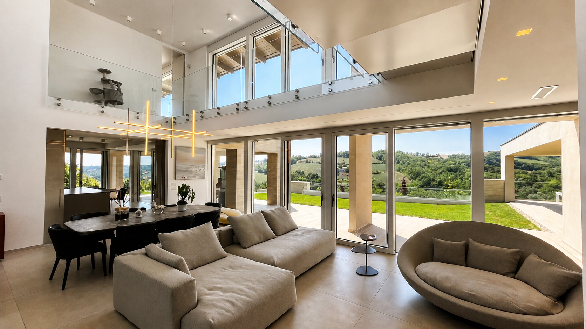
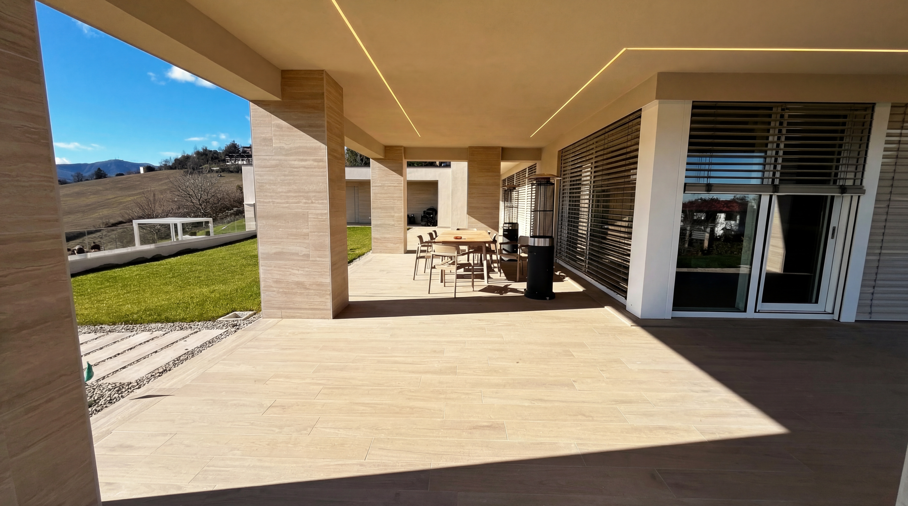

I metri quadrati ci dicono quanto spazio abbiamo costruito, ma non necessariamente quanto spazio avremo realmente da vivere.
Quando iniziamo a progettare una casa, prima o poi arriviamo sempre a parlare di metri quadrati ed è inevitabile che sia così, perché la superficie serve per verificare il progetto, confrontarlo con il budget, rispettare le regole urbanistiche e capire molto concretamente quanto stiamo costruendo.
Quello di cui sono meno sicuro è che quel numero riesca davvero a raccontare quanto sarà grande quella casa una volta abitata.
In questi anni mi è capitato di entrare in case molto grandi nelle quali alcuni spazi sembravano non servire realmente a nessuno e, al contrario, in case più piccole che davano continuamente la sensazione di avere un posto in più, probabilmente perché la differenza non dipende soltanto dalla quantità di spazio disponibile, ma anche dal modo in cui gli ambienti sono messi in relazione tra loro e, soprattutto, da quello che succede quando arriviamo al confine tra la casa e ciò che le sta intorno.
Una stanza può prendere in prestito dello spazio.
Quando disegniamo una stanza possiamo misurarne con precisione la superficie, mentre è molto più difficile misurare quanto quella stessa stanza riesca a prendere in prestito da quello che ha intorno.
Una grande apertura verso il giardino non aggiunge nemmeno un metro quadrato alla superficie della casa, ma può cambiare completamente la percezione che abbiamo di quello spazio, soprattutto quando quello che vediamo all'esterno non rimane semplicemente un panorama da guardare ma entra, in qualche modo, a far parte della stanza.
È quello che succede quando il pavimento, il portico, il giardino e ciò che vediamo più lontano vengono pensati come parti della stessa relazione, anche se naturalmente appartengono a spazi molto diversi.
Per questo due soggiorni con la stessa superficie possono sembrarci molto diversi e, soprattutto, possono essere utilizzati in modo diverso.

Tra dentro e fuori.
Il portico è uno degli elementi che utilizziamo spesso nei nostri progetti e probabilmente dipende dal fatto che mi interessa molto quello spazio che non è completamente interno, ma non è nemmeno semplicemente esterno.
Quando piove ci permette comunque di utilizzare una parte dello spazio fuori dalla casa e durante l'estate crea quella zona d'ombra che spesso diventa uno dei luoghi più utilizzati, magari perché possiamo mangiare all'aperto o semplicemente lasciare una porta aperta mantenendo un rapporto diretto con il giardino.
La cosa che trovo ancora più interessante, però, è quello che il portico fa alla stanza che gli sta dietro, perché un soggiorno che si affaccia direttamente sul giardino e lo stesso soggiorno preceduto da uno spazio coperto non sono, secondo me, la stessa stanza: cambia la luce che entra, cambia il rapporto con l'esterno e cambia anche il modo in cui passiamo dalla casa al giardino.
Per questo faccio fatica a considerare il portico come qualcosa che possiamo aggiungere alla fine, magari perché è rimasto dello spazio o perché ci piace l'idea di avere un posto dove mangiare fuori. Se c'è, deve essere progettato insieme alla casa perché contribuisce al modo in cui quella casa funzionerà.
Progettare l'ombra.
Quando parliamo dell'ombra portata da un portico o da una schermatura solare è facile pensare soprattutto agli aspetti tecnici e naturalmente questi sono importanti, perché la profondità di un aggetto, l'orientamento di una facciata e la posizione delle aperture determinano quanta radiazione solare entrerà durante l'estate e quanta ne potremo invece utilizzare durante l'inverno.
Sono decisioni che incidono sul comfort della casa e anche sul lavoro che successivamente dovranno fare gli impianti, ma c'è un'altra cosa che mi interessa altrettanto: l'ombra è anche uno spazio nel quale stare.
In una giornata estiva cerchiamo spontaneamente il punto del giardino o della terrazza nel quale possiamo stare senza essere sotto il sole e quindi una superficie esterna anche molto bella, ma completamente esposta proprio nelle ore in cui vorremmo utilizzarla, rischia di diventare uno spazio che abbiamo costruito e che poi utilizziamo molto meno di quanto immaginavamo.
Quando progettiamo un portico o decidiamo la posizione di una schermatura stiamo quindi facendo contemporaneamente due cose: stiamo proteggendo la casa dal surriscaldamento e stiamo decidendo dove sarà piacevole stare fuori. Mi sembra importante che entrambe vengano pensate durante il progetto e non quando, alla prima estate, ci accorgiamo che in quel punto fa troppo caldo.

Non tutto lo spazio deve essere interno.
Quando durante un progetto abbiamo la sensazione che manchi spazio, una delle reazioni più immediate è quella di aumentare la superficie della casa e qualche volta è effettivamente la soluzione corretta, ma altre volte penso valga la pena fermarsi e capire che cosa ci manca davvero e, soprattutto, se quello spazio debba necessariamente essere chiuso, riscaldato e raffrescato.
Una parte della vita di una casa può avvenire in un portico, in una terrazza protetta, in una corte o semplicemente in una zona del giardino ben collegata alla cucina e al soggiorno e, nel nostro clima, alcuni di questi spazi possono essere utilizzati per parecchi mesi durante l'anno.
Naturalmente non possiamo considerare un portico come se fosse un altro soggiorno e non avrebbe senso farlo, ma credo che sarebbe altrettanto sbagliato non considerare quanto la sua presenza possa modificare il modo in cui utilizziamo il soggiorno vero e proprio e, più in generale, la sensazione di spazio che avremo vivendo quella casa.
Qualche metro quadrato in più all'interno e un buon rapporto con l'esterno non sono quindi necessariamente due modi equivalenti di ottenere la stessa cosa e proprio per questo vale la pena capire, ogni volta, quale dei due ci serve davvero.
Il giardino non arriva dopo la casa.
Mi capita qualche volta di vedere progetti nei quali sembra che prima sia stata decisa la casa e successivamente ci si sia chiesti che cosa fare dello spazio rimasto intorno, mentre noi cerchiamo, per quanto possibile, di ragionare sulle due cose contemporaneamente perché la posizione dell'edificio sul terreno determina inevitabilmente anche il modo in cui utilizzeremo tutto ciò che gli sta intorno.
Decide dove avremo il sole al mattino e dove arriverà la sera, quale parte del terreno potrà essere più privata, da dove entreremo, che cosa vedremo dal tavolo della cucina e quale spazio esterno sarà più naturale utilizzare durante la giornata.
Anche la presenza di un albero può diventare importante nel progetto, non perché debba essere necessariamente l'architetto a decidere ogni cosa che succederà in giardino, ma perché sapere che da una certa finestra vedremo quell'albero, oppure che in un certo punto avremo ombra nel pomeriggio, può cambiare il significato di una stanza e il modo in cui scegliamo di aprirla verso l'esterno.
La casa occuperà soltanto una parte del terreno, ma il modo in cui la posizioniamo può permetterci di abitare molto meglio anche tutto il resto.
Allora quanto spazio ci serve davvero?
Non credo esista un modo alternativo ai metri quadrati per rispondere a questa domanda e non vorrei nemmeno far passare l'idea che una casa di cento metri quadrati possa essere considerata grande come una di duecento soltanto perché ha un bel giardino, perché evidentemente non è così.
Credo però che, quando cerchiamo di capire quanto spazio ci serve, valga la pena non fermarsi immediatamente al numero e provare invece a immaginare come utilizzeremo quegli spazi, quali stanze abbiano davvero bisogno di essere grandi, quali possano esserlo meno e quale rapporto vogliamo avere con ciò che si trova fuori.
Dove vorremmo poter uscire quando apriamo una porta, che cosa ci piacerebbe vedere stando seduti a tavola, dove potremo mangiare quando fuori piove ma la temperatura è piacevole, oppure dove troveremo ombra durante un pomeriggio di luglio sono tutte domande che non aggiungono necessariamente metri quadrati alla casa, ma che possono cambiare parecchio il modo in cui quei metri quadrati verranno utilizzati.
Quanto è grande, allora, una casa?
Alla fine continueremo a misurarla in metri quadrati, perché è la misura che abbiamo e perché quei metri rappresentano comunque una parte importante del progetto.
Dopo tanti anni, però, penso che quando cerchiamo di capire quanto debba essere grande una casa dovremmo considerare anche il modo in cui gli spazi interni riescono a utilizzare quello che hanno intorno, perché un portico ben posizionato, un'apertura verso il giardino, una zona d'ombra nel posto giusto o semplicemente una finestra che mette in relazione una stanza con qualcosa che vale la pena guardare possono modificare il modo di vivere una casa molto più di qualche metro quadrato aggiunto senza sapere bene perché.
Forse è anche per questo che, quando iniziamo un progetto, la domanda su quanti metri quadrati servano non può essere separata da quella su come quei metri quadrati verranno abitati.